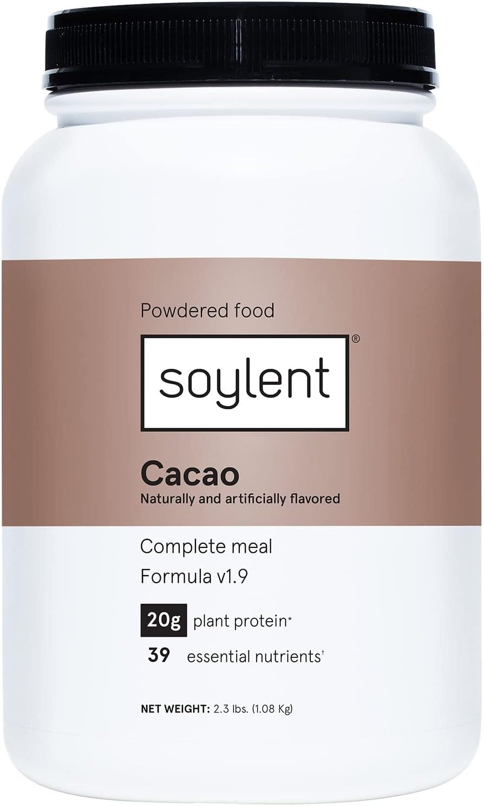

Soylent

Description
Do you really need a recipe for this one, guy? It's friggin' Soylent.
Ingredients
- The friggin' powder from the soylent jar/bag/whatever
- The scoop thing? That count as an ingredient?
- Water, milk, whatever, 400 ml or so.
Steps
- Pour the water into your shakey mug. Should that have been an ingredient? Maybe, idk, it's SOYLENT ya dingus.
- Pour two scoops of the powder in.
- Close the lid. THIS STEP IS VERY IMPORTANT.
- Shake that bottle like it's what your mama gave you.
- Enjoy your definitely-not-made-from-people complete liquid nutrient, you madman.